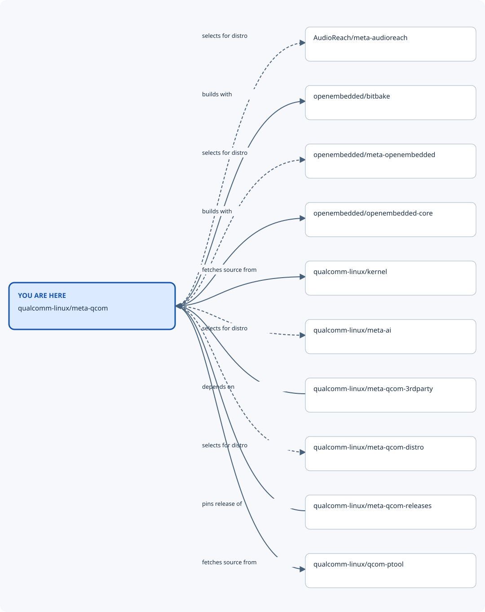

Repository map: qualcomm-linux/meta-qcom¶
You are here: qualcomm-linux/meta-qcom. This view shows recorded nearby repositories, including
both incoming and outgoing relationships. The diagram prioritises software/build
connections when present; the table also records shared automation. Dashed lines mean optional or indirect
relationships; the table states when each connection applies.

From |
Relationship |
To |
When it applies |
Evidence |
|---|---|---|---|---|
qualcomm-linux/meta-qcom |
selects for distro |
AudioReach/meta-audioreach |
Optional qcom-distro kas composition; not required by every BSP-only build. |
|
qualcomm-linux/meta-qcom |
builds with |
openembedded/bitbake |
Development kas configuration on master; release locks can select other revisions. |
|
qualcomm-linux/meta-qcom |
selects for distro |
openembedded/meta-openembedded |
Optional qcom-distro kas composition; not required by every BSP-only build. |
|
qualcomm-linux/meta-qcom |
builds with |
openembedded/openembedded-core |
Development kas configuration on master; release locks can select other revisions. |
|
qualcomm-linux/meta-qcom |
uses automation from |
qualcomm-linux/github-action-matrix-outputs-read |
GitHub Actions integration at the evidence revision; workflow/action refs are specified by the calling files. This is not a runtime dependency. |
|
qualcomm-linux/meta-qcom |
uses automation from |
qualcomm-linux/github-action-matrix-outputs-write |
GitHub Actions integration at the evidence revision; workflow/action refs are specified by the calling files. This is not a runtime dependency. |
|
qualcomm-linux/meta-qcom |
fetches source from |
qualcomm-linux/kernel |
linux-qcom-next recipe; kernel provider and source revision are configuration-dependent. |
|
qualcomm-linux/meta-qcom |
selects for distro |
qualcomm-linux/meta-ai |
Optional qcom-distro kas composition; not required by every BSP-only build. |
|
qualcomm-linux/meta-qcom |
selects for distro |
qualcomm-linux/meta-qcom-distro |
Optional qcom-distro kas composition; not required by every BSP-only build. |
|
qualcomm-linux/meta-qcom |
fetches source from |
qualcomm-linux/qcom-ptool |
Partition recipe source; pinned by qcom-ptool.inc. |
|
qualcomm-linux/meta-qcom |
uses automation from |
qualcomm-linux/upload-private-artifact-action |
GitHub Actions integration at the evidence revision; workflow/action refs are specified by the calling files. This is not a runtime dependency. |
|
qualcomm-linux/meta-qcom |
uses automation from |
qualcomm/qcom-reusable-workflows |
GitHub Actions integration at the evidence revision; workflow/action refs are specified by the calling files. This is not a runtime dependency. |
|
qualcomm-linux/meta-qcom-3rdparty |
depends on |
qualcomm-linux/meta-qcom |
wrynose-compatible main snapshot 8927b428bcae; required layer collection. |
|
qualcomm-linux/meta-qcom-3rdparty |
uses automation from |
qualcomm-linux/meta-qcom |
GitHub Actions integration at the evidence revision; workflow/action refs are specified by the calling files. This is not a runtime dependency. |
|
qualcomm-linux/meta-qcom-arduino |
uses automation from |
qualcomm-linux/meta-qcom |
GitHub Actions integration at the evidence revision; workflow/action refs are specified by the calling files. This is not a runtime dependency. |
|
qualcomm-linux/meta-qcom-distro |
uses automation from |
qualcomm-linux/meta-qcom |
GitHub Actions integration at the evidence revision; workflow/action refs are specified by the calling files. This is not a runtime dependency. |
|
qualcomm-linux/meta-qcom-releases |
pins release of |
qualcomm-linux/meta-qcom |
Milestone tags and kas lock files; select the desired release tag. |
Nearby repositories¶
AudioReach/meta-audioreach — AudioReach recipes selected by the distro configuration.
openembedded/bitbake — Build engine used by the kas configuration.
openembedded/meta-openembedded — Additional OpenEmbedded layers selected by the distro configuration.
openembedded/openembedded-core — Base OpenEmbedded recipes and classes.
qualcomm-linux/github-action-matrix-outputs-read — Workaround implementation - Read matrix jobs outputs
qualcomm-linux/github-action-matrix-outputs-write — Workaround implementation - Write matrix jobs outputs
qualcomm-linux/kernel — Linux Kernel for QLI mainline
qualcomm-linux/meta-ai — OpenEmbedded layer for AI/ML related recipes
qualcomm-linux/meta-qcom — OpenEmbedded/Yocto Project BSP layer for Qualcomm based platforms
qualcomm-linux/meta-qcom-3rdparty — OpenEmbedded/Yocto Project BSP layer for Third-Party Maintained Qualcomm based platforms
qualcomm-linux/meta-qcom-arduino — OpenEmbedded/Yocto Project BSP layer for Qualcomm based Arduino platforms
qualcomm-linux/meta-qcom-distro — OpenEmbedded/Yocto Project Reference Distribution layer for Qualcomm based platforms
qualcomm-linux/meta-qcom-releases — This repo will be used to store kas-lock files for milestone releases of meta-qcom
qualcomm-linux/qcom-ptool — qcom-ptool contains various device partitioning utilities like ptool.py, gen_partitions.py and various sample partition configuration files needed for Qualcomm SoCs.
qualcomm-linux/upload-private-artifact-action — An action for use in qualcomm-linux projects that need to publish CI artifacts that aren’t cleared for public distribution.
qualcomm/qcom-reusable-workflows — Qualcomm reusable workflows
Full ecosystem map¶
Return to the Qualcomm repository map for the wider ecosystem, other nearby views, and the locally browsable site. Relationship claims apply to the linked evidence revisions; use release-compatible revisions for a build.
Generated from data/repositories.json (SHA-256 602a68056238817dccee9f98db5c06ea20d0bb165a53a0c23ff2d0423240dfca).
Edit the shared dataset and regenerate this view to change relationships.
Back to the ecosystem overview.
Explore AudioReach/meta-audioreach.
Explore openembedded/meta-openembedded.
Explore openembedded/openembedded-core.
Explore qualcomm-linux/github-action-matrix-outputs-read.
Explore qualcomm-linux/github-action-matrix-outputs-write.
Explore qualcomm-linux/kernel.
Explore qualcomm-linux/meta-ai.
Explore qualcomm-linux/meta-qcom-3rdparty.
Explore qualcomm-linux/meta-qcom-arduino.
Explore qualcomm-linux/meta-qcom-distro.
Explore qualcomm-linux/meta-qcom-releases.
Explore qualcomm-linux/qcom-ptool.